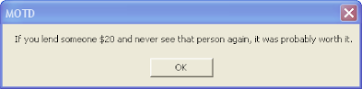
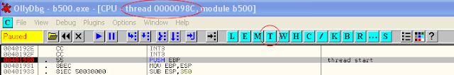
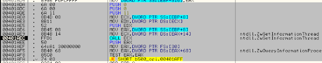
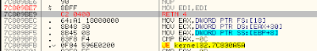
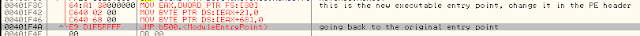
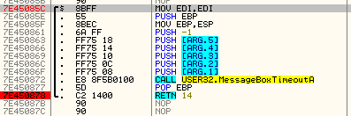
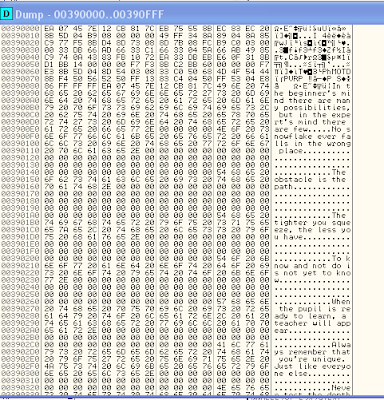
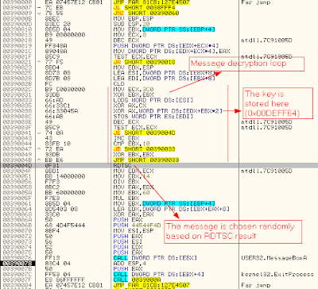

Defcon 19 (2011) - BINARY L33tness 500 - Writeup
{kind=link}
[Original Binary](media/b500)
Preliminary analysis
This is a standard Windows 32bit PE binary file.
When you open it, a random sentence appears in a MessageBox. If you press OK, the program closes.
While the MessageBox is open, CPU utilization goes to 100%. Using ProcessExplorer you can see that, inside the b500 process, there are 4 threads using the CPU.
|  |
| "Standard" b500 executable behavior |
If you try to open it using Ollydbg and press F9, you will get an exception and the process ends. This means that there are some anti-debugging checks.
Main thread
Let's start analyzing the main thread.
The import table is almost empty, imports are retrieved dynamically (LoadLibrary/GetProcAddress) using the function at 0x00401170. Fortunately, Ollydbg is able to understand the destination address of a dynamic call, at least when the EIP is on it.
At 0x004015EC VirtualAlloc is used to allocate a memory region (at 0x00390000), then memset is used to fill with zeros this region.
4 threads are created (0x00401872), for every thread a region in the heap is allocated and inside it the addresses of some APIs are written. The entry point of all these threads is 0x00401930 (this is a parameter of CreateThread API).
Then the following APIs are called:
WaitForMultipleObjects
CloseHandle This is an anti-debugging check [1 (5) kernel32!CloseHandle]
VirtualFree
Secondary threads
First of all, we have to take into consideration that threads are scheduled in a non deterministic way, so we can have different results during different execution of b500.
Ollydbg helps us showing the thread ID of the currently debugged thread on the main window caption, moreover, we can see a list of all currently active threads pressing the T button.
|  | |
| Ollydbg and threads |
So, let's place a breakpoint at 0x00401930 and restart the program. While debugging the secondary threads, keep in mind that, if the breakpoints at 0x00401930 is hit again, this means that a new thread is started.
The code of secondary threads is quite complex, however we can easily understand that:
The addresses of some APIs are retrived.
RDTSC is called (inside function at 0x00401F10), this instruction writes in EDX:EAX the current value of the number of ticks since reset [2], basically this is used for some time-based anti-debugging checks.
ZwSetInformationThread is called (0x00401AEC) with flag ThreadHideFromDebugger (push 11). This is an anti-debugging trick [1 (4) NtSetInformationThread].
PEB!NtGlobalFlags is checked. This is another anti-debugging check [1 (3) PEB!NtGlobalFlags].
Some memory operations are performed.
CloseHandle API is called. This is another anti-debugging check [1 (5) kernel32!CloseHandle].
|  |
| ZwSetInformationThread call and PEB!NtGlobalFlags check |
Defeating anti-debugging checks
CloseHandle
We can patch the API code in order to return to the caller without performing any action. There could be a problem if CloseHandle would be called even for legitimate reasons, but, in this executable, this is not the case. Since this function takes one argument, we have to restore the stack with a RETN 4 instruction.
|  |
| CloseHandle patch |
PEB!NtGlobalFlags
We can change the value of this flag before executing any other instruction. I have patched the original b500 executable file. The new b500 changes the value of PEB!NtGlobalFlags (and PEB!IsDebugged, that is used by IsDebuggerPresent API), then it jumps to the original entry point.
You can use Ollydbg to patch the code and save the modifications to the executable. Then, use a tool such as LordPE to change the executable entry point to the address where the patch is located.
|  |
| PEB check patch |
RDTSC
Just do not place breakpoints inside the code of secondary threads. Of course you need breakpoints and single-step while debugging these threads, but, once you have understood how they work, you can skip them.
ZwSetInformationThread
Since this API is called (with flag ThreadHideFromDebugger) hardware breakpoints will not work in the thread that shows the MessageBox, but you can still use regular (INT3) breakpoints!
With the CloseHandle patch and the PEB check patch active, the MessageBox will appear even if b500 is open inside Ollydbg. Now we can search for the key.
Finding the key
Restart the program with patch enabled (since Ollydbg disables patches at every restart, I created a modified version of b500 executable with PEB check patch hardcoded). When the MessageBox appears, you need to understand where it has been called, so place a breakpoint inside USER32 code, for instance here:
|  |
| This breakpoint will be hit when you press the OK button on the MessageBox |
Press F8 until you will arrive to some code (0x00390078) located in 0x00390000 memory region (this region has been allocated by the main thread using the API VirtualAlloc)
This is the memory dump of this memory region at 0x00390000:
|  |
| Memory dump at 0x00390000 after that MessageBox has been shown |
We can see all the message strings. But no string seems to be the key. Probably the key is a value used during the decryption of the strings.
On the top of the 0x00390000 region there is some code:
|  |
| Decryption function for MessageBox strings |
It is easy to identify the decryption loop. To retrieve the key, you can put a breakpoint inside the decryption loop. The problem is that hardware breakpoints do not seem to work (because ZwSetInformationThread with ThreadHideFromDebugger flag has been called). You can use a standard breakpoint, but, since the memory in this region is written dynamically, you need to place the breakpoint after that the memory has been set correctly.
Place an hardware breakpoint on write on 0x0039002B and restart the program. This breakpoint is hit twice, the first time when this region is filled with zeros, the second time when the decryption loop code is written. After that the code has been written, you can place a regular breakpoint on 0x0039002B.
When it is hit for the first time, the decryption of the MessageBox strings is going to start. You can single step the loop and see that at 0x00390038 a key is read from 0x00DEFF64 and it is 0x10*2=0x20 bytes long.
So, the solution is:
2FE3903DF19E4B01AC590FBA671DC8752BD68339E49147F29F5502AD6310BB71
References
[1] http://www.symantec.com/connect/articles/windows-anti-debug-reference
[2] http://en.wikipedia.org/wiki/Time_Stamp_Counter